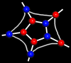

|  |
| This website was created at the University of California at Berkeley for Professor Lisa Pruitt. | |
| This intelligent database demonstrates the power of the world wide web and the portability of Java Applets. Any user around the world with connection to the internet and a Java-capable browser can access this website. |
|
David Yu |
Sriranga Veeraraghavan |